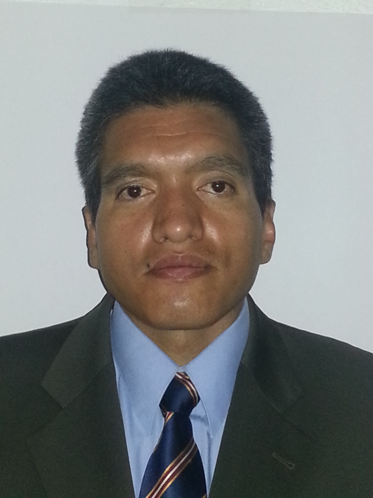

|  |
Jose Manuel Lomeli Corona
Network Solutions Architect
|
SUMMARY
Network Solution Architect with over 20 years of experience in large Enterprise and Service Provider networks. Strong knowledge and solid hands-on experience with IPv4, IPv6, OSPF, ISIS, BGP, MPLS, LDP, RSVP, SR, L3 VPN, L2 VPN, QoS, Multicast, in diverse deployments scenarios from IP Access to IP Core, and Data Center solutions. Experience in design, planning, optimization and implementation and project management.
I have worked for international leading companies such as Cisco, Juniper, Huawei and TechMahindra in Mexico and Latin America, in different service provider customers like Uninet, Telcel, Tigo, Digicel, Claro, AT&T, etc.
Continuous self-improvement and learning to maintain technical leadership of applicable technologies (Data Center, SDN, Private and Public Cloud, Security Solutions, Automation, etc.)
PROFESSIONAL EXPERIENCE (November 2016 - Present)
Tech Lead Architect for AT&T Mexico
Lead the IP Architects team in ATT Planning department.
- Defined requirements for new solutions for IP Architectures (ISP, IP Core, IP Backhaul) and Data Center.
- Collaborated with vendors to develop High Level Design, Low-Level Designs and Proof of Concept labs.
- Defined strategies for migrations to new architectures and technologies.
- Technologies: ISIS, BGP, MPLS, SR, RSVP TE, L2L3 VPN, IPv6, QoS, SDN and Edge Cloud NFVs.
- Evaluated and tested products from vendors: Cisco, Juniper, Huawei, Arista, Nokia and others.
- Participated in vendor selection process for private Cloud project aimed at providing Telco services for ATT. Defined long-term adoption strategies and designs.
Huawei Technologies Mexico October 2013 - November 2016
Service and Delivery Datacom Expert for North Latin America Region
In charge of providing support to post and pre sales services to Huawei service provider customers.
• Developed High Level Design definition and Low-Level Designs for IP Core and IP Backhaul solutions.
• Performed Network Analysis and Optimization Services for MPLS and IP Backhaul networks.
• Network Migration Planning for IP Core and IP Backhaul network to Huawei products.
• Supported projects in Mexico, Ecuador, Salvador, Honduras, Trinidad, Bolivia, Colombia, Chile, and Guatemala for several companies: Telcel Mexico, Claro, Digicel, Entel (Bolivia), WOM (Chile), and TIGO.
• Technologies: OSPF, ISIS, BGP, MPLS, VPN L3 and VPN L2, RSVP TE, IP RAN (HVPN and Seamless), Metro Ethernet, Multicast, IPv6, QoS, Firewalls, SDN, among others.
• Supported products: Huawei NE40E, CX600, ATN, S9300, Eudemon1000 Series products.
Cisco Systems de Mexico July 2011 - September 2013
Network Consulting Engineer IV
In charge of providing consulting and optimization services to Cisco account UNINET (America Movil).
• Participated in information gathering workshops with the Customer to understand the Customer’s existing network design and technical requirements.
• Conducted problem replication in customer lab and Cisco labs for IP Core and BRAS scenarios.
• Evaluated new features before implementation.
• Validated and developed configuration standards and policy configurations with customer’s design team.
• Supported technologies: OSPF, BGP, MPLS, L3 VPN, mVPN, BRAS, QoS, Netflow, CoPP, IPv6.
• Supported products: Cisco ASR9000, ASR1000, CRS-1, XR2000, GSR, C7600 Series products.
Juniper Networks de Mexico January 2010 – June 2011
Resident Engineer
In charge of providing support and operation services to Juniper UNINET (America Movil) account.
• Troubleshoot equipment and network problems and tracked JTAC cases through to problem resolution.
• Conducted technology workshops with the customer to discuss equipment and network problems, provided case status updates, including the reasons for any problems encountered and the solutions.
• Trained the customer’s implementation and support personnel to configure and operate Juniper products.
• Assisted the customer to develop Network Operating and Equipment Operating Procedures.
• Performed lab testing evaluation for new features and products with Junos and JunosE operating systems.
• Supported technologies: OSPF, BGP, MPLS, L3 VPN, QoS, BRAS, PPPoE, PPPoA.
• Supported products: Juniper E, M, J, and EX Series products.
NEXTIRAONE de Mexico Mexico 1995 – 2009
Professional Services Engineer 1999 - 2009
In charge of providing support to post sales and pre-sales engineers and conducted the planning and implementation of emerging technologies.
• Performed network analysis and performance evaluation for major customers, providing recommendations to optimize their infrastructure, configuration standardization, and operation recommendations.
• Supported Cisco Datacenter products as Nexus switches, load balancers, WAAS, and firewalls.
• Performed security hardening audits and introduced customers to security policy awareness.
• Implemented DWDM/SDH networks with Cisco ONS 15454, 15540 and 15530 products.
• Designed and implemented MPLS networks with L3 VPN, and QoS features.
• Evaluated new Cisco technologies in IP Telephony, VoIP, and Video over an MPLS network.
Network Engineer 1996 to 1999
In charge of providing support to post sales engineers and implemented the biggest projects in the company.
• Responsible of the operation of customers with StrataCom (later Cisco) equipment. Each of these customers used IPX and IGX StrataCom switches, Fast Pads frads, Cisco and Bay Networks routers. Prepared new engineers in WAN Switching technologies.
• Led projects and implemented big corporate networks with ATM and Frame Relay technologies.
Network Operator 1996
In charge of providing support the operation of a Public Data Network (InterVAN). This network used to provide Internet access to more than 100 customers through a connection to UUNET and also provided connectivity needs to regional offices in Mexico and the US. Now is part of UNINET (America Movil) network.
• Added new customers to this network. These responsibilities included: coordination with technical staff of WorldCom for international connections, evaluate requirements and access design for customer networks.
• Configured and installed Cisco, HP, and Nortel (Bay Networks) routers in the customer premises. The configuration of these routers included IP, IPX, Static Routes, RIP, and EIGRP.
• Coordinated compatibility test with other Frame Relay vendor equipment (New Bridge and Cascade) for integration with existing Frame Relay networks in the premises of the customer.
EDUCATION
- Engineer in Electronic and Communications (1989 - 1994)
Instituto Politecnico Nacional, Mexico City, Mexico
- Master in Information Technology Administration (2009 - 2011)
Universidad de las Americas Puebla, Cholula City, Mexico
PROFESSIONAL CERTIFICATIONS
Cisco IOS-XR Specialist (2012)
CCIE in Routing and Switching No. 3803 (passed lab exam twice, on 1998 and 2008)
Cisco Data Center Networking Infrastructure and Data Center Application Support Specialist (2008)
Past certifications: Cisco CCNA, CCNP, CCIP, CCDP, CCSP, Nortel Router Specialist
ADDITIONAL SKILLS
Linux, Python, and Ansible.
My GIT Project Reporistory